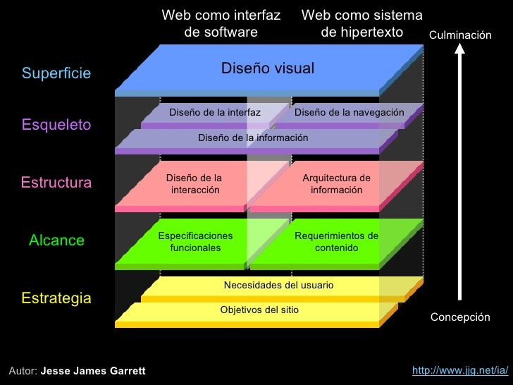
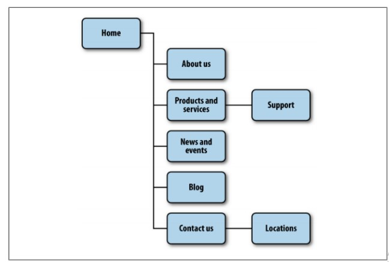
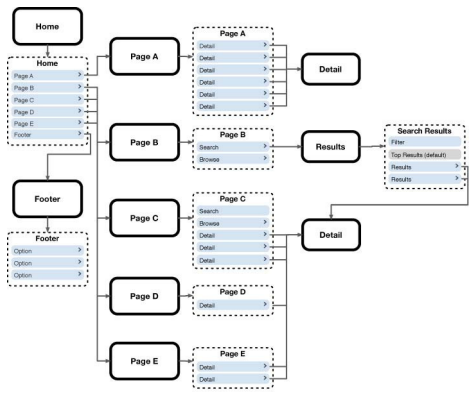
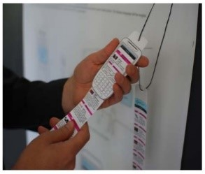
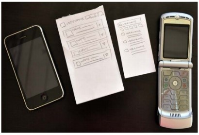

Contenido:
DISEÑO PARA CONTEXTO
Contexto con C mayúscula
Es cómo los usuarios obtendrán valor de algo que están haciendo actualmente, o, en otras palabras, la comprensión de las circunstancias. Es el modelo mental que se establecerá para formar la comprensión. Por ejemplo, pararse frente a los restos del Muro de Berlín y leer sobre la historia en mi teléfono es agregar Contexto de mi tarea. Mejora mi experiencia y conciencia de lo que me rodea de una manera significativa.
Me refiero a esto como "proporcionar Contexto" como en "esta información me proporciona contexto o una mejor comprensión de lo que significa este momento para mí". El contexto permite comprender mejor a una persona, lugar, cosa, una situación o incluso una idea añadiendo información a él.
Contexto con una c minúscula
Es el modo, entorno en el que se realiza una tarea o las circunstancias del entendimiento.
· La ubicación actual o contexto físico
El contexto físico influye en acciones; si estoy en casa, en la oficina, en un coche, en un autobús o en un tren, caminar por las calles, etc., cada entorno dictará cómo accedo a la información y, por tanto, cómo obtengo valor de ella.
Los dispositivos móviles pueden no ser tan ricos en contenido, pero pueden proporcionar información sobre el presente, que es una forma extensa de decir que el contexto móvil ofrece el valor de que el contexto impreso simplemente no puede. Sin embargo, el contexto de los medios no se trata solo de la inmediatez de la información que recibimos; también se puede utilizar para atraer al público en tiempo real, algo que otros medios simplemente no pueden hacer.
· Nuestro estado mental actual o contexto modal
Cada vez que nos exponemos a varios estímulos, nuestro cerebro se pone a trabajar tratando de comprender las señales que nuestros sentidos envían a nuestro cerebro. A través de algún milagro del nervioso central sistema, estas señales se convierten en reacciones. A veces son involuntarios reacciones físicas, como alejar la mano de una llama, y a veces son reacciones mentales, que llamamos pensamientos y razonamiento.
Teniendo esto en cuenta, el contexto modal está en el corazón de toda acción o inacción deliberada.
IMPORTANTE
A los usuarios no les importa el aspecto físico, los medios o los modos, pero eso no significa que podamos ignorarlos. Todo lo contrario: un buen diseño significa que estos elementos deben ser invisibles para el usuario. Nuestro trabajo es crear experiencias intuitivas usar la tecnología para anticipar y resolver problemas para el usuario a través de la menor cantidad posible, acciones deliberadas. Los usuarios tienden a no preocuparse por lo que no pueden ver, lo que funciona para nosotros porque hacer grandes experiencias paga nuestras facturas.
Los dispositivos móviles, a diferencia de cualquier otro medio, presentan una oportunidad increíble para crear experiencias contextuales y significativas que no se parecen a nada que hayamos visto. El truco es el dominio, que, como todas las cosas buenas, requiere tiempo, paciencia y comprensión.
El contexto es lo que hace que los dispositivos móviles sean un medio tan poderoso y emocionante.
DESARROLLAR UNA ESTRATEGIA MÓVIL
Con una estrategia incorrecta, puede ser difícil justificar y aún más difícil monetizar los costos de los dispositivos móviles.
El primer obstáculo en el campo de los dispositivos móviles es como definir nuestros objetivos comerciales y la segunda tarea de como definir las metas del usuario se vuelve un poco más difícil, pero todavía tienes el control. A medida que las piezas continúan cayendo y comienzan a implicar la definición del contexto, los desafíos de diseño, los problemas del marco y las pruebas, comienza a luchar para alinear cada uno de ellos y colocarlos en los lugares correctos, pero aun así se debe tener una estrategia en mente.
Se debe ver la estrategia móvil como un movimiento que puede transformar el proyecto, empresa u organización. Se trata de descubrir cómo infundir un nuevo medio en su negocio y construir una plataforma innovadora. Por ejemplo:
· Organización basada en ventas, podría utilizar la web móvil para proporcionar información a sus vendedores en el campo, permitiéndoles mostrar precios y estimaciones en vivo mientras almuerzan con un cliente.
· Cuidado de la salud, puede usar dispositivos móviles para proporcionar registros; acceso a formularios, políticas y procedimientos; incluso las historias clínicas del paciente, y todo junto a la cama del paciente.
· En el caso de bienes raíces, puede proporcionar a los compradores potenciales listados en vivo de propiedades similares cercanas, información sobre la casa, información de la escuela, el valor promedio de las casas en el vecindario y calculadoras de hipotecas, todo mientras recorre una propiedad.
· Gobiernos locales, puede utilizar la tecnología móvil para el transporte público, para aumentar la conciencia o la participación de la comunidad, para obtener comentarios sobre proyectos de obras públicas y para opinar sobre los problemas importantes que enfrenta la comunidad.
· Minoristas, puede proporcionar puntos de compra instantáneos sin que los clientes tengan que ir a la caja registradora, brindar soporte continuo al cliente, vincular reseñas de clientes en línea e información de igualación de precios, todo mientras el cliente tiene un producto en la mano.
REGLAS PARA CREAR UNA ESTRATEGIA MÓVIL
El móvil es un medio diferente y se rige por un conjunto diferente de reglas. Los grandes productos móviles pueden adaptarse o incluso mirar más allá de la estrategia tradicional para identificar formas nuevas y únicas de abordar tanto los desafíos como los beneficios que ofrece el medio móvil.
Regla 1: Olvida lo que crees que sabes
El desarrollo móvil es un ecosistema en constante evolución con muchas facetas. Incluso personas que han estado en la industria durante un tiempo, con solo una pequeña fracción del grupo de nuevos anuncios y tecnologías que se anuncian en una semana determinada.
Olvídate de todo lo que crees saber sobre tecnología móvil. Empieza por el principio con el proyecto. Pregúntate a ti mismo y a tu equipo las preguntas difíciles sobre su negocio, sus usuarios y su capacidad de desarrollo, sin las restricciones de las últimas novedades, herramientas o tecnología.
Consejos y trucos que te ayudarán a olvidar lo que sabes:
· No intentes emular lo que se ha hecho antes y ponlo frente a su usuario. Concéntrese en lo que es adecuado para su usuario, no en lo que es adecuado para el usuario de otra persona.
· Empieza por el principio, incluso si un proyecto ha estado en desarrollo por un tiempo, aún se puede comenzar de nuevo. Proporciona nuevas perspectivas y da vida al proyecto desde el principio.
Regla 2: Cree lo que vez, no lo que lees
Hay todo tipo de métodos científicos para realizar investigaciones de mercado, pero el medio de investigación más infalible es simplemente hablar con la gente sobre lo que usan y cómo lo usan, equilibrado con sus instintos con respecto a lo que cree que el mercado comprará.
No cometa el pecado cardinal de los grupos focales, que es pedirles que validen sus propias ideas. Hablar con los usuarios se trata de conocer y comprender sus rutinas diarias. ¿Cómo y cuándo utilizan sus dispositivos móviles? ¿Qué tareas realizan con ellos? ¿Qué información es más valiosa para ellos? ¿Qué influye en sus decisiones? Comprender su mercado es comprender a sus usuarios. Comprender qué influye en sus decisiones le dirá qué influye en sus acciones.
Consejos y trucos para creer lo que ve y no lo que lee:
· No confíe en ningún informe, hecho o cifra que tenga más de uno o dos años. Lo más probable es que esté mal.
· Realizar consultas contextuales, no grupos focales. Vaya a sus usuarios y hágales preguntas en persona, en su contexto, no en el suyo. A menudo tienen mucho que decir; Escuche y mantenga la mente abierta.
· Grabe todo. Nada presenta su caso como las propias palabras de sus usuarios.
· No olvide innovar. Pruebe cosas nuevas, sea audaz y no tenga miedo de fallar.
· La mejor estrategia tiene éxito incluso si falla. Tenga un plan de contingencia. Si su plan no cumple con las expectativas, ¿cómo puede reutilizar lo que ha aprendido o hecho en otra cosa?
Regla 3: Las restricciones nunca son lo primero
El móvil es un medio muy limitado con muchos obstáculos técnicos. Es difícil no tener restricciones del medio, como dispositivos, redes o marcos, que influyan en las decisiones.
Crear una gran estrategia para dispositivos móviles requiere pasión por la investigación, algo de visión, un poco de riesgo y una creencia optimista, incluso temeraria, de que puedes marcar la diferencia. Desafortunadamente, estos no son los rasgos que normalmente se encuentran en los pasillos de las corporaciones. Cuanto más grande sea la organización, más difícil será el desafío.
Simplemente comience con una gran idea, libre de restricciones, y permita que el proceso de lluvia de ideas siga su curso. Probablemente ya tenga un comienzo, un medio y un final para su proyecto en su cabeza, pero escuche a su equipo y escuche sus preocupaciones. Necesita el apoyo de todos los recursos que pueda obtener en su equipo. Los días más oscuros no lo son demasiado adelante.
Los proyectos móviles pueden ser difíciles de iniciar. Empiece con las grandes ideas y no deje que las muchas limitaciones del medio acaben con su proyecto antes de empezar.
Regla 4: Concéntrese en el contexto, los objetivos y las necesidades
El contexto es crucial para crear cualquier estrategia de producto móvil, pero ¿cómo lo encuentra? Al diseñar una estrategia para dispositivos móviles, es muy difícil predecir el contexto del usuario.
Las necesidades, a diferencia del contexto o incluso de los objetivos, son algo que podemos predecir con seguridad al observar información básica sobre nuestro usuario.
Esto no quiere decir que profundizar en situaciones no producirá los mismos resultados que construir a partir de necesidades. Pero al enfocarnos en las necesidades, empoderamos al usuario para que realice una tarea que probablemente haga de todos modos y nuestro producto se posiciona inmediatamente como algo de valor en su mente.
Consejos sobre cómo centrarse en el contexto, los objetivos y las necesidades:
• Definir el contexto de los usuarios es lo primero que se debe hacer. Sin él, no tiene una estrategia móvil; solo tienes un plan de acción.
• Descubra los objetivos de los usuarios y luego intente comprender cómo el contexto de los usuarios altera sus objetivos.
• Con los objetivos entendidos, averigüe las tareas que los usuarios quieren realizar.
• Busque formas de filtrar el contenido por contexto, como ubicación, medios y modelo.
Regla 5: No puedes dar soporte a todo
Uno de los primeros pasos en la construcción de una estrategia para dispositivos móviles es analizar honestamente lo que dispositivos pueden admitir, pero no todo se puede aprobar.
Hay literalmente cientos de modelos de dispositivos que se venden en todo el mundo cada año y hay docenas de navegadores, cada uno con sus propias peculiaridades.
Comience por apuntar no solo a los dispositivos que sabe que tienen sus usuarios, sino a los que sabe que consumen una gran cantidad de datos. Su primer paso será decidir que apoyará y que no. Y sí, está bien admitir solo una clase de dispositivo, siempre que sepa que los usuarios lo respaldan. El truco es saber cuál es el dispositivo adecuado para soportar.
Vea cómo responden sus usuarios y solo entonces comience a planificar la siguiente fase de su proyecto y determine qué dispositivos adicionales puede admitir.
Consejos y trucos para recordar cuando se trata de compatibilidad con dispositivos
· No te mates tratando de apoyar todo. Comience con los dispositivos que mejor representen a su cliente principal.
· Recuerde, es posible que el dispositivo más popular o el más fácil de desarrollar no siempre sea el mejor dispositivo para su proyecto.
· Verifique los registros de su servidor para los dispositivos que actualmente acceden a su sitio.
Regla 6: No convierta, cree
El mejor lugar para comenzar una estrategia móvil es creando un producto, no simplemente tratando de reinventar uno para pantallas pequeñas.
Empiece por comprender a sus usuarios y los beneficios que ofrece el medio. Integre las necesidades, los objetivos y el contexto y tendrá un mejor comienzo que la mayoría.
Cree, en lugar de convertir experiencias específicamente para dispositivos móviles permite a sus usuarios obtener información más rápida, amigable y precisa
Consejos y trucos sobre cómo crear en lugar de convertir:
· Comprenda a su usuario y su contexto. Tener una idea de cómo y cuándo los usuarios accederán a su contenido ayudará a comprender cómo crear mejor una experiencia móvil personalizada.
· No olvide que los dispositivos móviles son un medio único con sus propios beneficios. No intente simplemente aplicar el mismo fundamento a su estrategia móvil como lo haría con su estrategia web o impresa.
Regla 7: Mantenerlo simple
Los dispositivos en realidad son computadoras muy inteligentes, pero la gente quiere usarlas de una manera sencilla. La gente no quiere que ofrezcas todas las funciones de tu aplicación web o aplicación existente. Quieren funciones simples que aborden las necesidades básicas y nada más. El usuario debe lidiar con muchas limitaciones; por lo tanto, debemos mostrar moderación en los productos.
Agregar característica tras característica es una trampa fácil en la que caer, pero mantener las cosas lo más simples posible, desde la estructura hasta el diseño y los dispositivos que admite, tiene innumerables beneficios. Mantenerse simple significa que tendrá muchos menos problemas de principio a fin, lo que facilitará su comercialización, lo que significa que aprenderá más de sus usuarios antes, lo que a su vez significa que puede iterar y evolucionar su producto más rápido, más barato y mejor que otros móviles que fabricamos.
ARQUITECTURA DE LA INFORMACIÓN
La arquitectura de la Información es la disciplina encargada del estudio, análisis, organización, disposición y estructuración de la información en espacios de contenidos y de la selección y presentación de los datos en los sistemas de información interactivos y no interactivos.
Disciplinas
· Arquitectura informacional
Como el usuario obtendrá información o realizará tareas dentro de un sitio web o aplicación.
· Diseño de interacción
El diseño de cómo el usuario puede participar con la información presente, ya sea en de forma directa o indirecta.
· Diseño de información
El diseño visual de la información o cómo el usuario evaluará el significado y la dirección dada la información que se le presentó.
· Diseño de navegación
Las palabras utilizadas para describir los espacios de información; las etiquetas o desencadenantes utilizados para decir los usuarios qué es algo y establecer la expectativa de lo que encontrarán.
· Diseño de interfaz
El diseño de los paradigmas visuales utilizados para crear acción o comprensión.
Elementos de experiencia de usuario
Arquitectura de información móvil
La arquitectura de información móvil describe las técnicas que se utilizan para diseñar y desarrollar la estructura de cómo se va a desplegar la información en un dispositivo móvil.
La arquitectura le proporciona un plan y las prácticas recomendadas que debe seguir al momento de diseñar, de modo que obtenga un diseño bien estructurado.
Manteniéndolo simple
Cuando piense en su arquitectura de información móvil, querrá mantenerla lo más simple como sea posible tomando en cuenta lo siguiente:
• Apoyar las metas definidas
• Mantener etiquetas claras y sencillas
Mapas de Sitio
Los mapas del sitio son una entrega de arquitectura de información clásica.
Representan visualmente la relación del contenido con otro contenido y proporcionar un mapa de cómo viajará el usuario a través del espacio informativo
Limite las oportunidades de cometer errores
En el contexto móvil, las tareas son cortas y los usuarios tienen un tiempo limitado para realizarlos. Y con los sitios web móviles, no podemos asumir que los usuarios tienen acceso a una conexión de banda ancha confiable que les permite volver rápidamente a la página anterior.
Confirma el camino provocando contenido
Una vez que los usuarios han seleccionado una ruta, no siempre está claro si están llegando a donde deben estar. Los sitios y aplicaciones con mucha información a menudo emplean o arquitecturas de desglose, lo que obliga al usuario a seleccionar categoría tras categoría para llegar a su objetivo.
Para reducir el riesgo de tiempo y dinero del usuario, queremos asegurarnos de Presentar suficiente información para que el usuario pueda recorrer nuestra arquitectura de información. exitosamente.
Clickstream
Es un término que se utiliza para mostrar el comportamiento en sitios web, mostrando el orden en el que los usuarios viajan a través de la arquitectura de información de un sitio, generalmente basada en datos recopilados de los registros del servidor.
Los flujos de clics suelen ser históricos y se utilizan para ver las fallas en su arquitectura de información, normalmente utilizando mapas de calor o porcentajes simples para mostrar a dónde van sus usuarios.
Sin embargo, la arquitectura de la información en dispositivos móviles se parece más al software que a la Web, lo que significa que se deben crear los flujos de clics al principio, no al final.
Flujo de Clicks
Wireframes
Son una forma de presentar la información en la página, también conocida como diseño de información.
Los Mapas del sitio muestran cómo se organiza nuestro contenido en nuestro espacio informativo; los wireframes muestran cómo el usuario interactuará directamente con él.
El propósito de los wireframes no es solo proporcionar una imagen para nuestro mapa del sitio; ellos también sirven para separar el diseño del diseño visual, definiendo cómo el usuario interactuará con él.
Prototipado
Formas de hacer creación de prototipos móviles sencilla y rápida:
Prototipos de papel
El nivel más básico que tenemos es la creación de prototipos en papel: tomando nuestros wireframes impresos incluso dibujos de nuestra interfaz, y poniéndolos delante de la gente.
Prototipo de contexto
El siguiente paso es crear un prototipo de contexto.
Toma un dispositivo de gama alta que le permite cargar imágenes a pantalla completa en él.
Tome sus wireframes o bocetos y cárguelos en el dispositivo, dimensionados para llenar la pantalla del dispositivo.
Prototipos HTML
El tercer paso es crear un prototipo estático ligero y semifuncional utilizando XHTML, CSS y JavaScript, si está disponible. Este es un prototipo que puede cargar en un dispositivo y producir la experiencia más cercana al producto final, pero con maniquí estático contenido y datos. Se necesita un poco más de tiempo, pero vale la pena el esfuerzo.
Different Information Architecture for Different Devices
Dependiendo de los dispositivos que necesite admitir, los wireframes móviles pueden variar desde lo muy básico al complejo. En los dispositivos de gama alta con pantallas más grandes, podríamos estar inclinado a agregar más interacciones, botones y otro desorden a la pantalla, pero esto sería un error. El hecho de que el usuario tenga un teléfono más avanzado no significa que le está dando licencia para empaquetar su pantalla con tanta información como puedas reunir.
El mito del diseño
Un pequeño secreto sobre el diseño interactivo es que las personas no responden a la estética visual.
Entre esto esta:
· Qué colores usas, si usas cuadrados o redondeados esquinas, degradados o fondos planos, ayuda a generar las primeras impresiones, pero no hacer demasiado para mejorar la experiencia del usuario.
Los usuarios aprecian buen diseño, pero rápidamente son indiferentes a la estética visual y se mueven casi inmediatamente al diseño (diseño de información), cómo se llaman las cosas (taxonomía), la capacidad de encontrar el contenido y lo intuitivo que es realizar las tareas.
Estas son todas las facetas de arquitectura informacional.
Al no enfocarse en la arquitectura de la información exclusivamente desde el principio, corre el riesgo de confundir sus disciplinas, sus entregables y, en última instancia, su dirección. Cuanto más tiempo pases enfocándote en solo su arquitectura de información, más rápido y menos costoso será su proyecto.
Accede aquí para tener más información